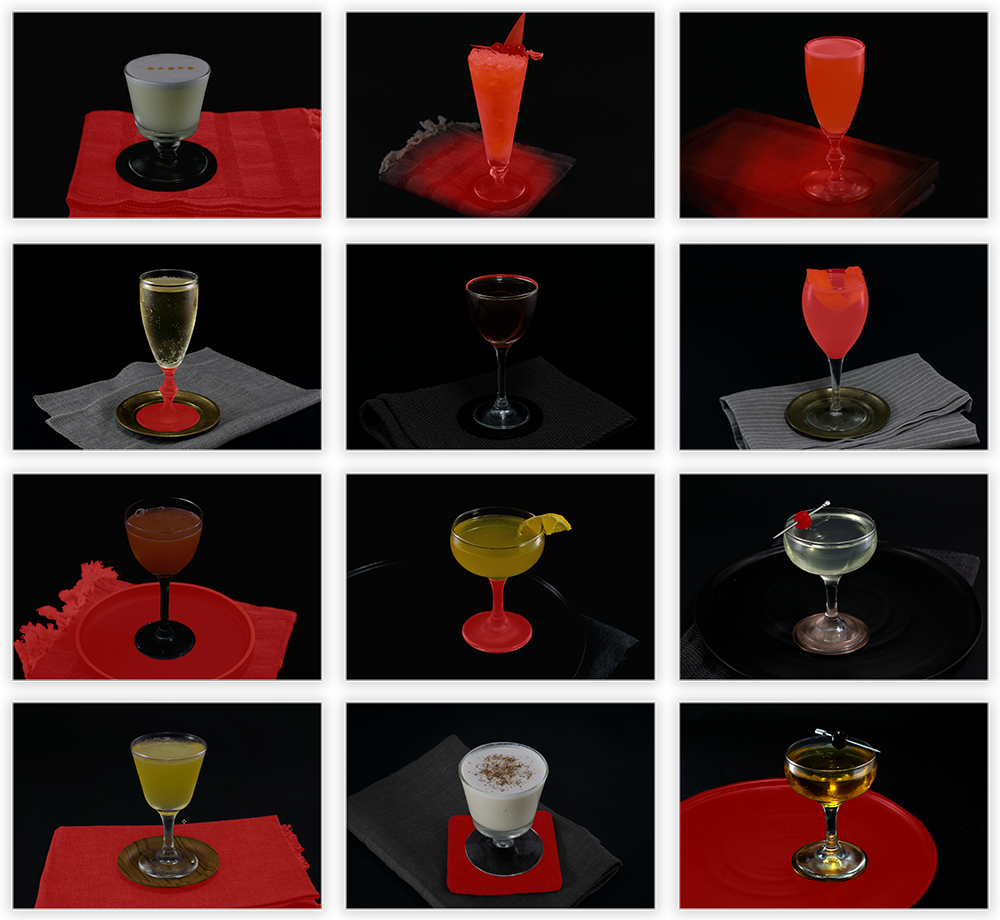
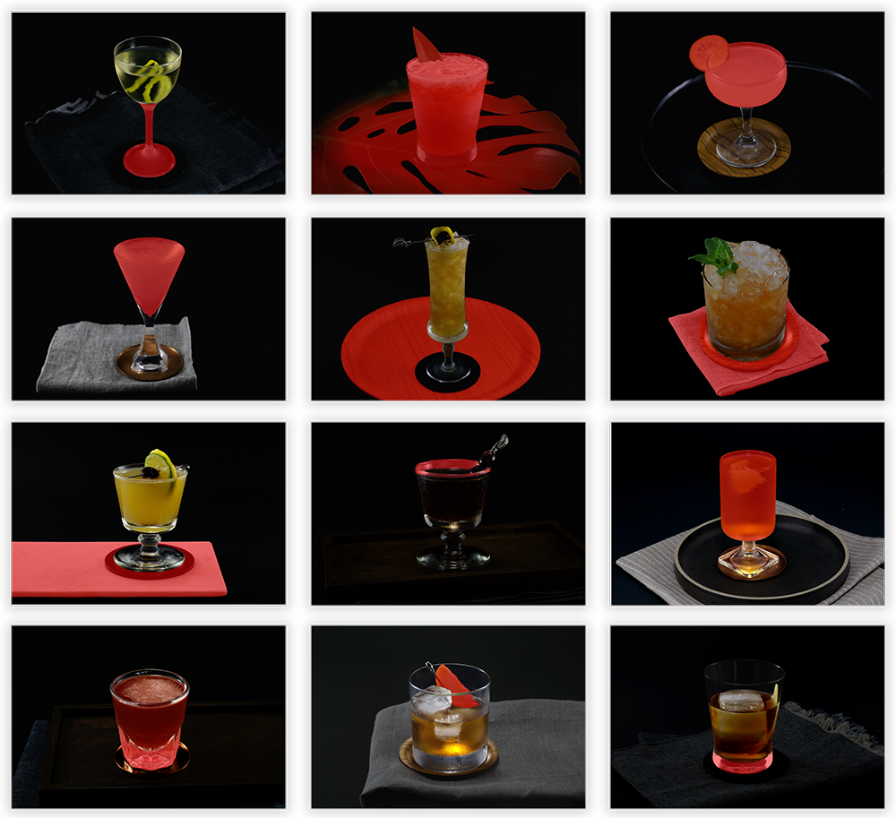

Sentry: persistent filter prototype
Trunk icon set
Sprig dashboard page: design & UI development
Tuxedo No.2: redesign moodboard
Trunk component library
Sentry marketing components: design & development

Sentry: careers page design & development
Trunk merge queue
Sentry APM product: designed and built with frontend team
Sprig surveys view: design & UI development
Sentry integrations menu with multiple child installs

Trunk jobs page


Tuxedo No.2 photos are meticulously edited, with multiple masks and layers
Sprig integrations view: design & UI development
Sentry events product: clickthrough prototype
Trunk merge queue marketing UI illustration